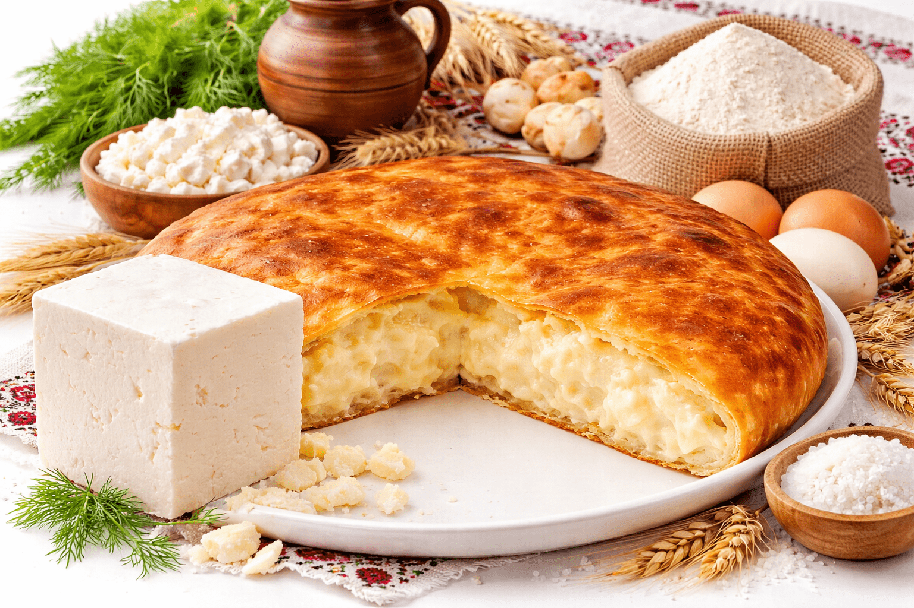
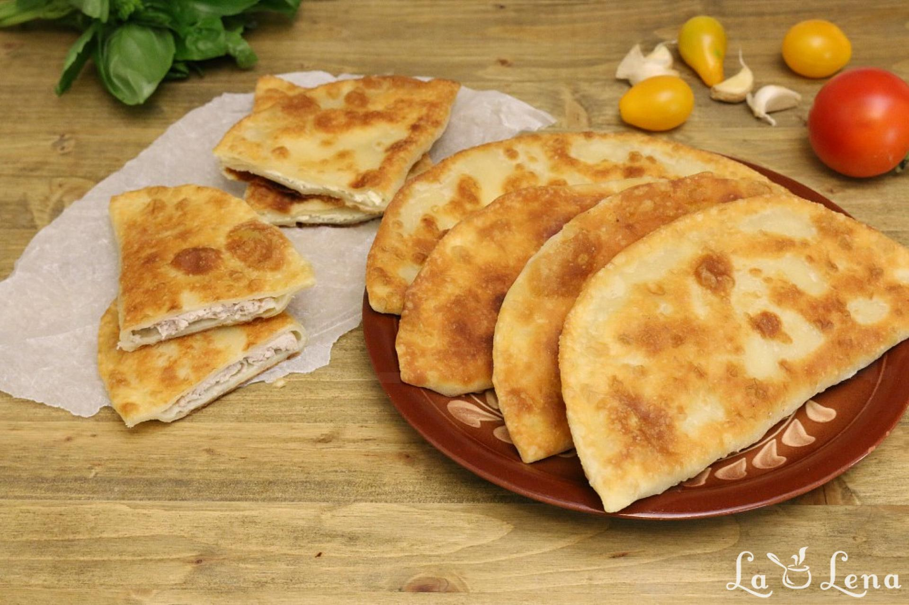
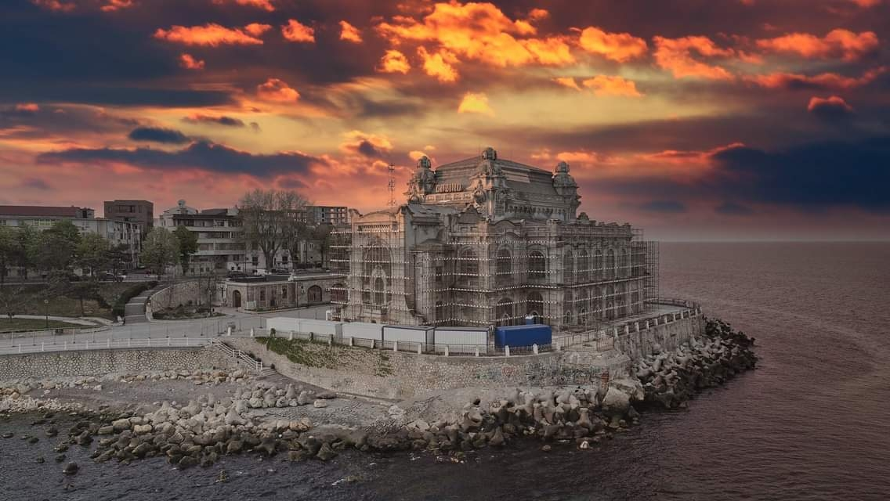
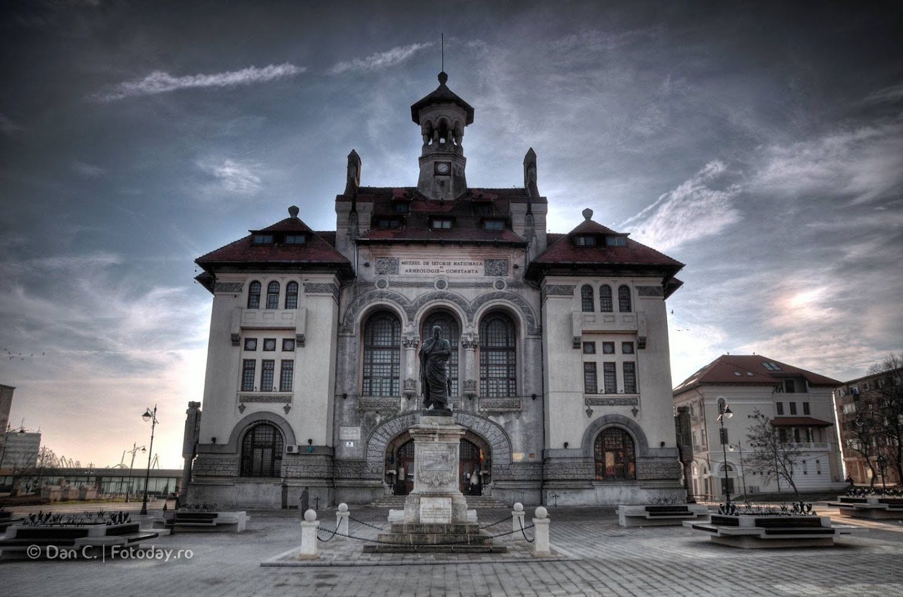
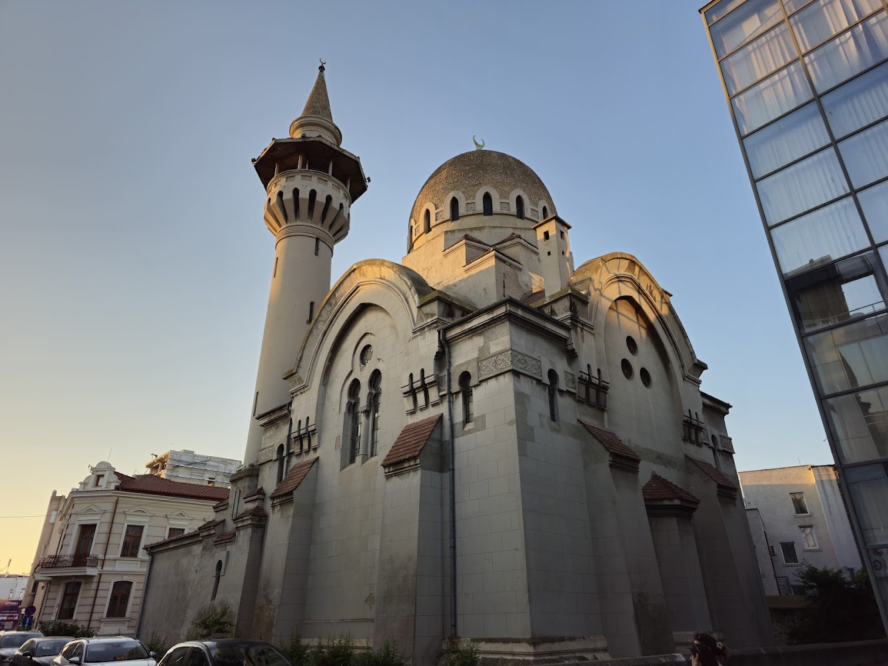

Best Culinary Delights of Constanta
Dobrogean Pie

Chiburekki

Fresh Black Sea Fish & Seafood

Constanta is Romania's oldest continuously inhabited city and its largest commercial port on the Black Sea. Originally founded by the Greeks as Tomis in the 6th century BC, it beautifully blends thousands of years of ancient history with a breezy, coastal vibe.





Constanța's Old Town is famous for its "interconfessional eight-square" area, a small radius where distinct places of worship stand together in harmony. You can walk from the grand Great Mosque of Constanța, pass by the historic St. Anthony of Padua Roman Catholic Church, visit the majestic Saints Peter and Paul Orthodox Cathedral, and view the nearby Ashkenazi Synagogue ruins. Walking this route is a profound look into the multi-ethnic and deeply tolerant cultural tapestry of the Dobrogea region.
Because Constanța sits on top of the ancient Greek and Roman city of Tomis, you can feel history right beneath your feet. Visiting the National History and Archaeology Museum in Ovidius Square allows you to explore an incredible collection of ancient artifacts, including the famous "Glykon Glykon" snake statue and stunning Roman mosaics. It gives you a deep appreciation for the city's role as a legendary maritime crossroads for thousands of years.
Strolling along the rocky promenade right next to the historic, Art Nouveau Casino is the quintessential Constanța cultural ritual. For over a century, locals and travelers alike have gathered here to walk, talk, and watch the waves of the Black Sea crash against the concrete walls. It is an experience that captures the poetic, melancholic, and romantic soul of this ancient port city perfectly. textbooks and Bibles printed in the Romanian language—a core piece of the nation's cultural history.